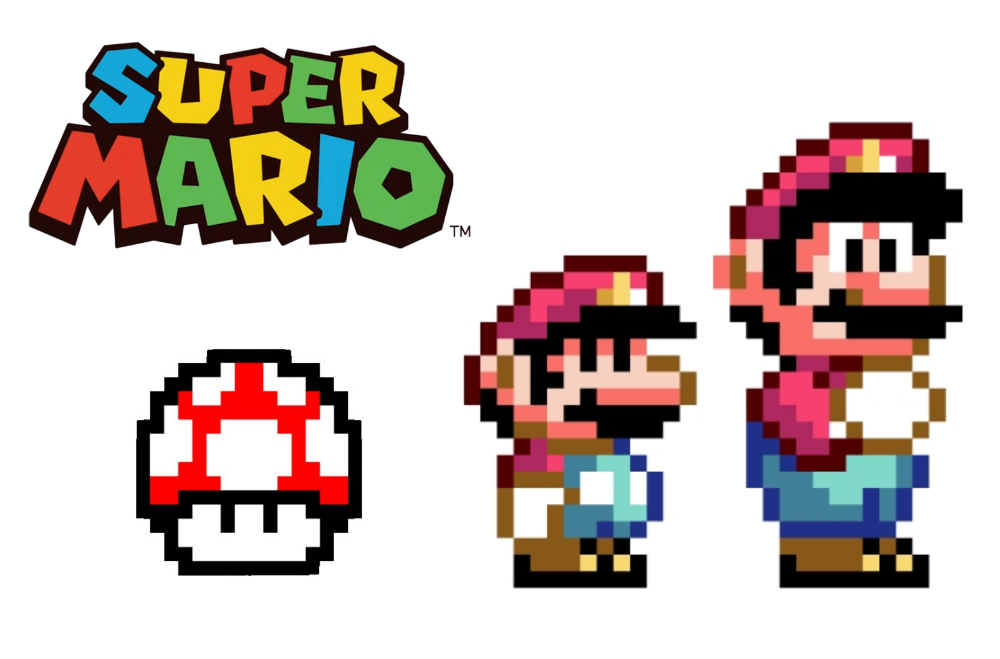

Design para Educação por Gui Bueno
Um guia ilustrado e no level easy
Uma rápida introdução a alguns conceitos , métodos e estratégias de Design Instrucional. Tem como finalidade estimular o diálogo , a colaboração e a fusão (por que não?) entre as áreas da Educação e do Design de Jogos.
Introdução MUITO informal para que eu mostre pra todo mundo o quão divertido é estar lá e o quão não acadêmica será essa fala.
Dizer que eu queria ser tratado como mais alguém na faculdade, um colega...
Não há muito tempo eu era mesmo! E essa ideia de fazer uma fala para mim é meio assustadora.
Nada disso de ser o especialista, o cara de games... Quero ser o Gui, da sala. (à Xavante)
Gesticular. Mover as mãos. How to sound smart!
Gui Bueno
Pecha Kucha 20x20
dividido por 2
Mas já que eu estou aqui e vocês não me conhecem, e se eu fosse colega de fato vocês conheceriam,
vou fazer uma apresentação MUITO rápida e de boas com alguns fatos da minha vida.
Vocês manjam Pecha Kucha?
Educação
Tecnologia Mídias
Idiomas
Design Ativismo
Transparência Incertezas da vida
Jogos?
Gosto, jogo bastante, tenho um interesse crescente, inclusive... Mas estou um tanto desatualizado e não foquei nisso, mesmo tendo estado no MAGNET, na NYU. Tratarei vocês como especialistas nesse assunto, porque eu não sou. Mesmo se você entrou na faculdade há pouco tempo, aproveite do status de especialista. Comporte-se como um. Sua palavra tende a sempre ser mais interessante que a minha, porque sua experiência, seu interesse, e sua atuação no campo de jogos, seja qual for seu interesse ou especialização, é maior que a minha. Aqui, representamos alguns papéis: eu represento "o cara da educação" e vocês, os caras e as minas de jogos. Correto?
Aproveitando a ponte, até onde eu sei, é extremamente difícil definir o conceito de jogos, estou certo?
Lembro desse jogo, da La Molle Industria, aquele grupo de jogos "radicais" que fez o joguinho do McDonald's há uns 10 anos, vocês conhecem?
Eles fizeram esse site, chamado Game Dfinitions, que brinca com a dificuldade de definir a ideia de jogos: é um gerador de definições.
O que é aprender?
Antes que vocês se perguntem "Ué, mas esse cara veio aqui falar sobre educação e não sabe nem dizer o que é aprender?",
definições são complicadas nas ciências humanas. Vale sempre a pena dar um passo para trás e buscar ser abrangente e preciso.
Vocês não podem dizer muita coisa, porque, até onde sei, é bem difícil definir o termo "jogo" também.
O que é aprender?
De imediato, ao pensarmos em aprender, pensamos em uma sala de aula, um professor, uma lousa, um livro.
Dependendo da disciplina, talvez este livro seja acompanhado de uma calculadora, de um computador, etc.
Ou ainda, ao pensar em tecnologia para se aprender, somos remetidos a celulares, a um aprender ubíquo.
Aprender
Quando experiências alteram, de modo relativamente permanente , o comportamento ou o conhecimento de uma pessoa.
– Richard E. Mayer
Pronuncia-se mAier, não mEier.
Grifos meus.
O que é aprender?
Na nossa vida cotidiana, no nosso contato com o mundo, o que adquire o status de aprendizagem ou não?
O que é aprender?
E, justamente a partir daí, a gente pode começar a ser perguntar o inverso: e o que não é aprender?
O que não é aprender?
A gente nunca perde tempo, tá sempre aprendendo algo.
Vivo, logo aprendo.
Tá, beleza, agora a gente entende melhor o conceito de aprender.
Todos aprendem, quase que o tempo inteiro, em todo lugar...
Aprender, essencialmente, não tem nada a ver com escola.
Escola é só um pequeno fragmento disso tudo.
Estamos juntos até esse ponto? Legal.
Mas gente não simplesmente vive por aí, experimentando as coisas e aprendendo com o passar do tempo.
Copio, logo aprendo.
Vejam bem, filhotes de chimpanzés tendem a se aproximarem e observarem suas mães para copiar comportamento.
Isto é aprender. Copiar, observar, repetir. Mimetizar.
A gente busca aprender, a gente, como civilicação, estruturou contextos e locais onde esse aprender acontece, deliberadamente.
Claro que a observação e a participação continuam sendo importantes, assim como nos chimpanzés.
Mas avançamos bem nisso...
Ensinam, logo aprendo.
Instrução deliberada é uma das características que definem o homo sapiens. Não sou eu quem diz isso, é o Michael Cole.
Enfim, antropólogos obervaram que em todas as sociedades estudadas, há ao menos um momento em que adultos,
irmãos mai velhos param ou mudam a velocidade do que estão fazendo para se envolverem numa forma de ensino.
Co-participação de crianças.
Aprender facilitado por um ser humano. Aplicativos e jogos não ensinam, em tese.
Agricultura Especialização Ferramentas
Desenvolvimento da agricultura:
- Ferro e bronze
- Métodos e ferramentas complexas
- Pessoas vivendo juntas,
- Não mais nomades,
- Produção de excedentes.
- Escrita e proto-ciência.
Aprendo, logo contribuo.
Cultura de humanos:
- Cultivo
- Ajudar a crescer
- Ambiente artificial
- Condições otimizadas para desenvolver
- Especialização e divisão de trabalho
Com o desenvolvimento da agricultura,
técicas, métodos, ferramentas,
ficou necessário aprender para participar
da sociedade e para ajudar a sociedade a
se desenvolver
Aprendo, logo produzo.
Um salto histórico: século XVIII e XIX, revolução industrial, escolarização formal de um número massificado de crianças com tendência a ser obrigatório.
Esta tendência continua até hoje, assim como algo que o Cole chama de características universais da escola, que são:
Linha de Produção
Modelo de ensino circunstancial, não planejado. No entanto, é amplamente disseminado e resistente a mudanças.
– Michael Cole
Nessa altura da vida, ter fé em qualquer transformação por conta da tecnologia é um ato suspeito, quase desesperado.
Além disso, outras forças em jogo: classes dominantes que buscam a permanência dessas condições e privilégios, pais que trabalham todos os dias e não podem criar suas crianças.
Cole acredita que alguma mudança só poderia acontecer caso fosse primordial para a sobrevivência humana que o modelo de linha de produção fosse substituído.
Local Fixo Sequêncial Avaliador Institucional Instrumentalizador Canalizador
Locais permanentes
Notas (avaliação)
Organização sequencial com dificuldade crescente.
Institucionalização e burocratização para que o professor seja mais um funcionário que um mestre, uma engrenagem de um sistema de ensino padronizado.
Base de instrumentalização para serviços públicos e especializações em atividades econômicas.
Canalização da diferenciação social com base em performance (melhores alunos acabam em empregos que pagam mais, de modo geral)
Modelo da linha de produção", para classificar esse modelo de um modo crítico
Assíria, 2000 A.C.
Registro mais antigo de uma sala de aula.
Local para instrução:
- Pequenas sociedades agrículas
- Participação no local também
Local Fixo
Brasil, 2000 D.C.
Sei lá se é Brasil, mas tanto faz.
Daí sim, esses locais para treinamento de escrivões podem ser chamados de escolas.
Não é esquisito que seja tão igual? Pensa na evolução tecnológica que tivemos, agora compare com a evolução do espaço escolar. Estranho, né?
Local Fixo
Avaliação
Escola não é perfeita. Apontem problemas.
Escolarizando o Mundo
Tese é de que esse modelo de escola surgiu de modo circunstacial (isto é, não planejado), mas disseminou-se e tende a continuar.
Instrução deliberada é característica definitiva do homo sapiens, não a escolarização formal.
Co-dependência entre como as escolas funcionam e como as sociedades funcionam.
Tecnologia
Tá certo, mudanças ocorreram, avanços, correntes de pensamento, etc.
Mas esse modelo ainda reina, sobretudo por ter essa relação complexa com os sistemas de produção.
E, claro, onde existem problems, existe um mercado para soluções.
E é aí onde a tecnologia se insere... a ideia de que existe um produto ou uma nova ferramenta que resolva essas coisas aí é algo que ganha muita popularidade.
O Ve diz que ... De fato, o que surgiu de promessa no campo e que não deu em nada, é embaçado.
Claro que muita coisa muda e mudou, seja com tecnologias ou com noções avançadas de educação, mas os grandes problemas se mantém os mesmos... talvez até porque não sejam problemas de fato, mas sim, heranças de uma abordagem problemática do ensino formal.
Você pode perceber que mesmo onde a tecnologia reina, os problemas se mantém.
Uma sala de aula cheia de tablets também é uma sala de aula com problemas.
Talvez até por isso algumas sociedades resistam à tecnologia na sala de aula, tipo no Japão.
Design de Tecnologias Instrucionais
Jogos Educativos
E, seguindo nessa linha, eis os jogos educativos, finalmente.
A bola da vez, a nossa chance com editais...
Batalha Animada, dêem uma olhada.
O que vocês acham deles?
O que deu errado?
Foco no meio, não no aprendiz.
Escolarização" desse meio.
Educação Formal
Gamificada
Aulas, certificados, papéis, provas, ...
Votação
É educativo ou não é?
Dar a minha opinião em cada um deles. Ser rápido, contar a minha própria história, apaoxinado, ... tentar ser engraçado pode ser uma boa.
O que é um jogo educativo?
Educativo, não como em Educação Formal .
Pokémon e Condutividade
Eu aprendi muita coisa sobre condutividade elétrica jogando pokémon.
Pokémon Go?
O que estamos aprendendo ao jogar Pokémon Go?
Mario e nutrição

Jogando Mario, apreendi que comer cogumelo era nutritivo.
Educação
> Instrução
> Treinamento
Do mais amplo para o mais específico.
Educação são experiências que produzem aprendizagens deliberadas ou não.
Instrução são já experiências criadas para o proposito de catalisar a aprendizagem.
Por fim, treinamento é um tipo de instrução, mas focado em uma abilidade/capacidade específica.
Educação
Educação: aquele/a professor/a incrível que te ensinou mais que o conteúdo.
Instrução
Instrução: vídeo-aula no youtube para aprender a furar uma parede.
Treinamento
Treinamento: jogar guitar hero várias vezes até acertar 100% da música.
Educação
Amplo;
Experiências nas quais as pessoas aprendem
Por exemplo, aprender a dirigir no trânsito da cidade.
Instrução
Criar experiências particulares para facilitar/catalisar aprendizagem.
Simulador de direção? Simulador de aviões?
Treinamento
Abilidades específicas para aplicação imediata.
Tarefas do trabalho.
Some instructions are not training, like Math and Reading, which are not designed to a specific job task and, mainly, don't have immediacy of application.
Os jogos com maior impacto na educação não são educativos. São divertidos.
Como aprendemos?
Por que jogos são tão bons para aprender?
James Paul Gee
Gerenciar conhecimentos complexos
Jane McGonigal
Game mindset, ativação do hipocampo
Reflexão
Como você aprendeu o que sabe?
Procedimento
Pense em uma área de domínio.
Reflita sobre o seu aprendizado.
1. Pensem em algo que vocês sabem muito bem. Ou melhor, para evitar um possível excesso de modéstia, pensem em algo em que vocês se considerem bons e boas, ou ao menos acima da média. Pode ser em qualquer área. Eu, por exemplo, sei dirigir até que legal.
2. Ok, agora reflitam sobre como vocês aprenderam a ser bons e boas nessas áreas. Pensem em quando vocês começaram, pensem nas etapas de aprendizagem, pensem no aperfeiçoamento, na prática. Simplesmente tentem lembrar com bastante detalhes como isso aconteceu.
Percepções Comuns
Palavras-chave
Alguma conclusão?
Palavras-chaves sobre o assunto.
Aprendizagem de deiferentes naturezas.
Métodos diferentes para se aprender.
Etapas longas e duradouras.
Fator motivacional.
Papel da prática.
...
— Brasil, um país de tolos
E agora?
Questões?
Oficina?
Trocação de ideia?
Como aplicar?
Em vez de explicar o que são as coisas,
vamos tentar usar juntos essas coisas.
CC-BY 4.0
Pixabay
Pexels
Flickr
Wikimedia
Agradecimentos
Enric Llagostera
André Mion
Vinícius Bazan
Amanda Letícia
César Zanfolim
Gui Bueno
gob.bueno@gmail.com
http://guibueno.github.io/id